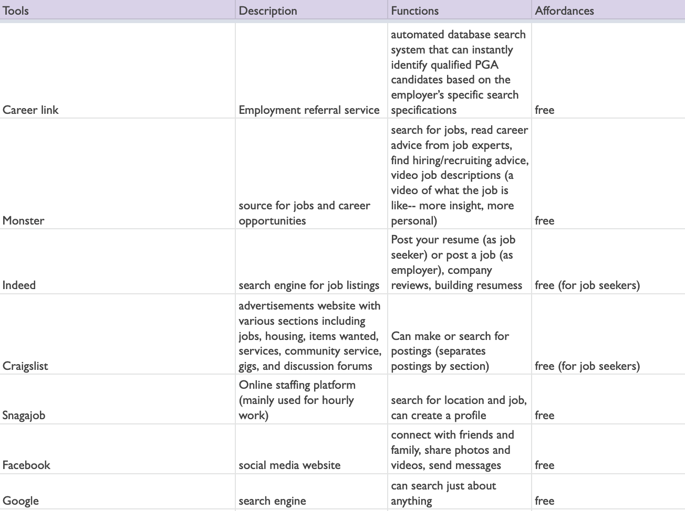
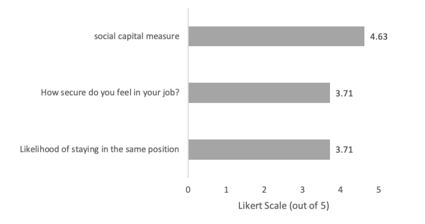
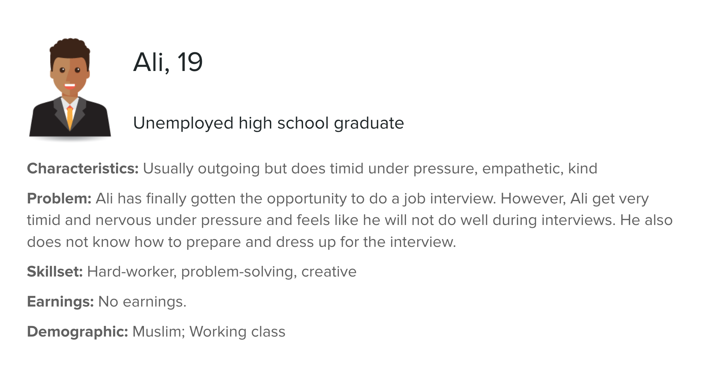
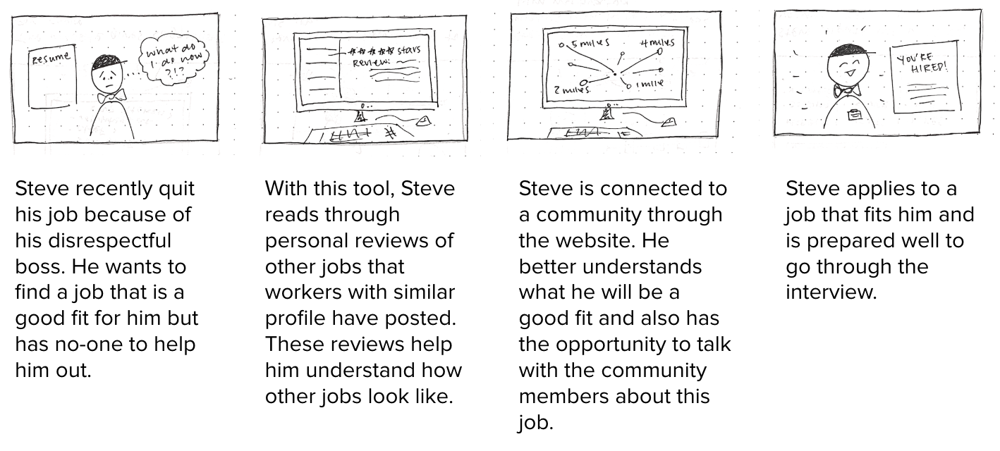
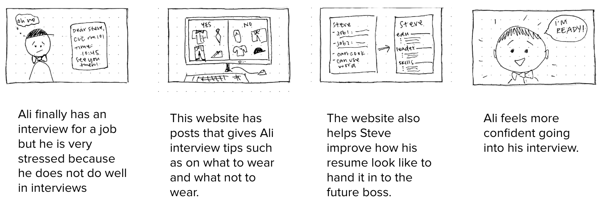

RESULTS
Analysis: Tools Used in the Job Search Process
Based on our interview responses, I analyzed the most popular technological resources our sample used during the job search process:

We used this analysis as a jumping off point to see what kind of features this population is drawn to. In this way, we can incorporate them into our prototype, combining them with additional features that could help improve the way in which they approach career transitions. These resources all generally have the same functions, with the exception of Facebook and Google, which serves much broader purposes. They all allow job seekers to search for jobs at no cost. Given the familiarity and accessibility for this particular population, we decided that our tool should be an online platform.
Interview Analysis
After consolidating all of the quantitative data from the interviews, we began noting patterns and similarities between interviews. Information that would later be used to inform the features of our tool are found below:

- Support is important. Out of these three categories, the average score when rating their social capital exceeded the other two categories by almost 1 point. Each participant rated their assistance efficiency either a 4 or 5 and attributed their high score to a supportive family member of friend in their life. 85% of our sample credited their current job to a supportive family member or friend. In this population, we can see a large emphasis on their social support network and community.
- There is a fine line between comfort and stagnancy. As for job security and likelihood of staying in the same position, both averaged scores were identical at 3.71. Coupled with qualitative information from our interviews, it seems that people stay in the same job because it is safe and financially reasonable, not necessarily because they genuinely enjoy it or find meaning in what they do.
- Technology should be user-friendly. When asked about the usefulness of technology during the job search process, many participants expressed that they use many online job search platforms, however, they wish to “just have one website… have it easier to look at all the jobs.” Especially during this tumultuous and confusing time, usability can help decrease frustration and increase confidence.
Storyboarding
With both quantitative and qualitative data in mind, we finally settled on three main features for our online platform. It will:
- 1. Connect users with their community
- 2. Help users find meaningfulness in their careers
- 3. Help users promote marketability
We then were able to create a user study proposal. We created three storyboards and three personas to depict the three main features of the website and how they are meant to be used. The three personas, Steve, Miguel, and Ali, are shown below:



Connecting to the Community: This facet of our tool connects individuals to their community - a virtual support system, if you will.

In this scenario, Steve has quit his job because of his disrespectful boss, but has no one to turn to. With this tool, he is connected with his community. The website allows him to read through personal reviews to better understand the work atmosphere. He is able to find a job that fits him best!
Finding Meaningfulness: in order to counteract the stagnancy some may feel in their career, this feature continuously encourages individuals to find their true passion - something that really excites them!

In this scenario, Miguel finds no interest in his work and hates going into his job everyday. He uses this tool to input his resume, hobbies of cooking and volunteering, values like service and helping others, likes and dislikes. The tool is able to give suggestions based on his input, such as becoming a chef or volunteering at the soup kitchen on the weekends. He reads through the suggestions and is able to find a job doing what he loves!
Promoting Marketability: Our tool will also help individuals feel more prepared and confident going into this uncertain period in their career paths.

In this scenario, Ali has an upcoming interview, but doesn’t know how to prepare for it. As a result, he is very nervous. This tool gives him attire suggestions based on what kind of interview he’s going in for. It also helps him review his resume. After using this tool, he feels much more confident going into the interview.
We are in the very beginning stages of prototyping. We know that this population values community and their social support system, so we hope to create an online neighborhood networking system in which communities are connected to support one another in their job search process. Based on the interview described above, additional features will be added to encourage users to find meaningfulness in their career, as well as marketability to increase levels of confidence when approaching changes to their careers.